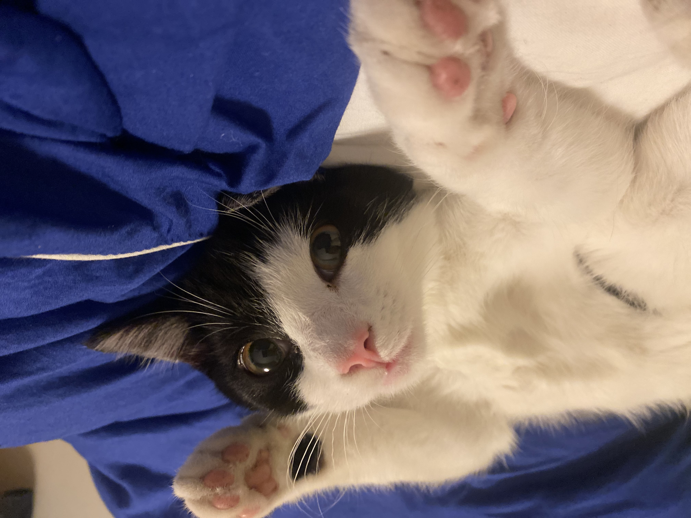
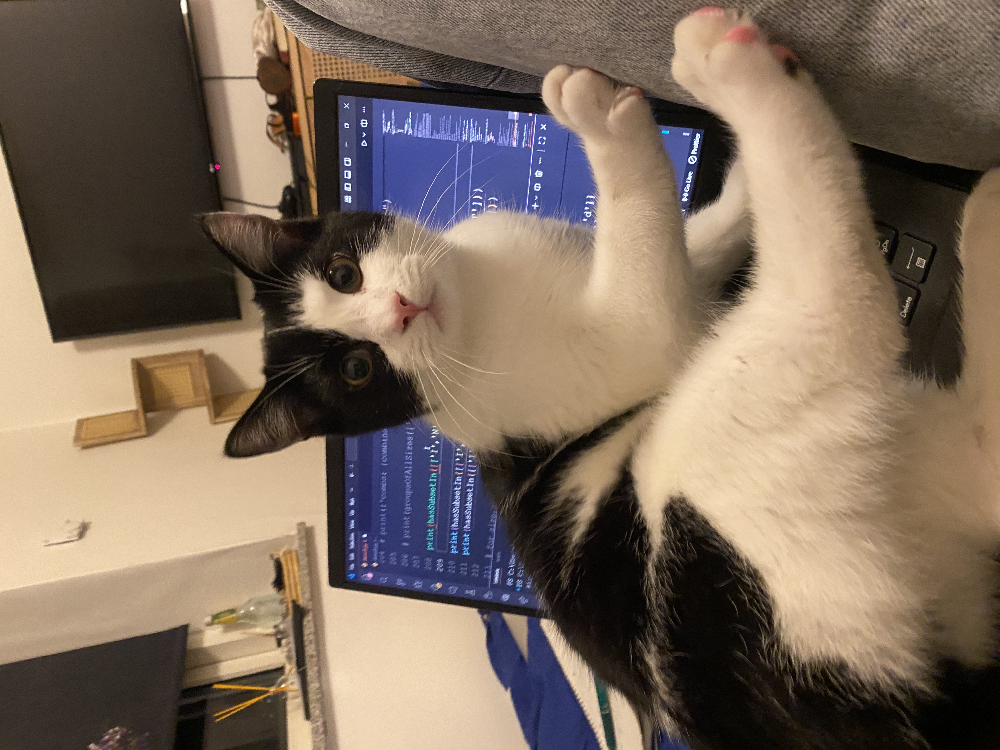

Alfred er lidt over et år gammel og er en rigtig sød og kælen kat. Han er både ude- og indekat, så han elsker at gå på opdagelse udenfor og fange mus, men nyder også at komme hjem og slappe af. Alfred er fuld af energi og elsker at lege, men han kan også godt lide en hyggelig lur. Han er en dejlig kat med masser af personlighed, og en vigtig del af familien.🐾
